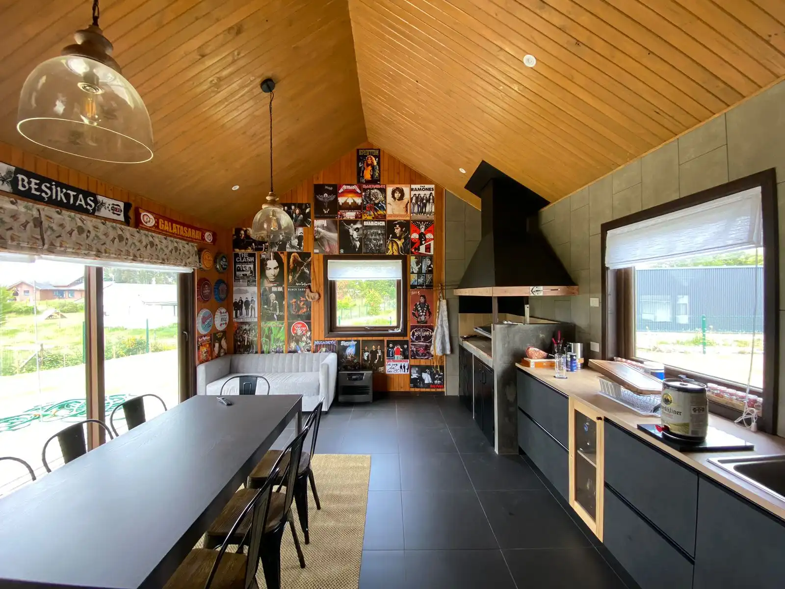
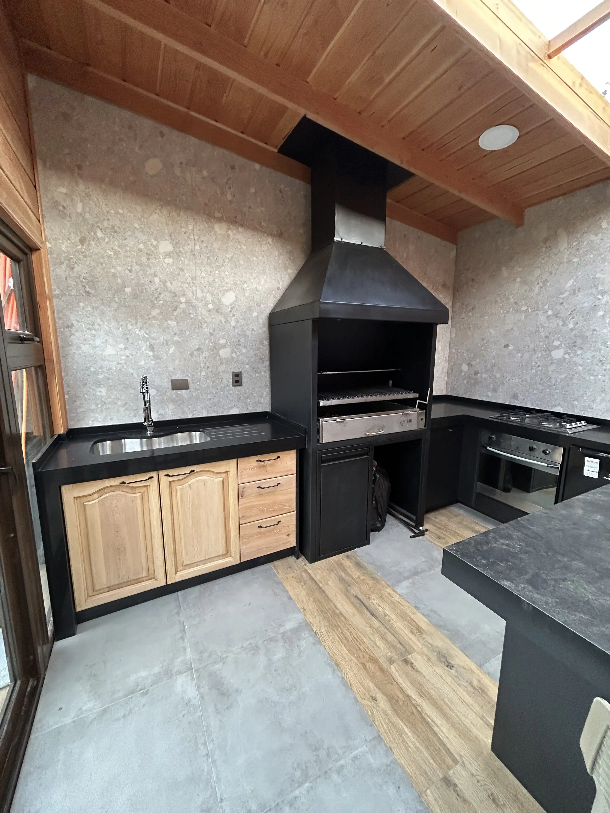

Alerce
Quincho FT
Remodelación rústica y funcional con maderas tratadas.
Ver más →
Creamos espacios de encuentro cálidos y funcionales, diseñados para disfrutar la tradición del sur sin importar el clima.

Remodelación rústica y funcional con maderas tratadas.
Ver más →
Diseño integral techado para disfrutar todo el año.
Ver más →